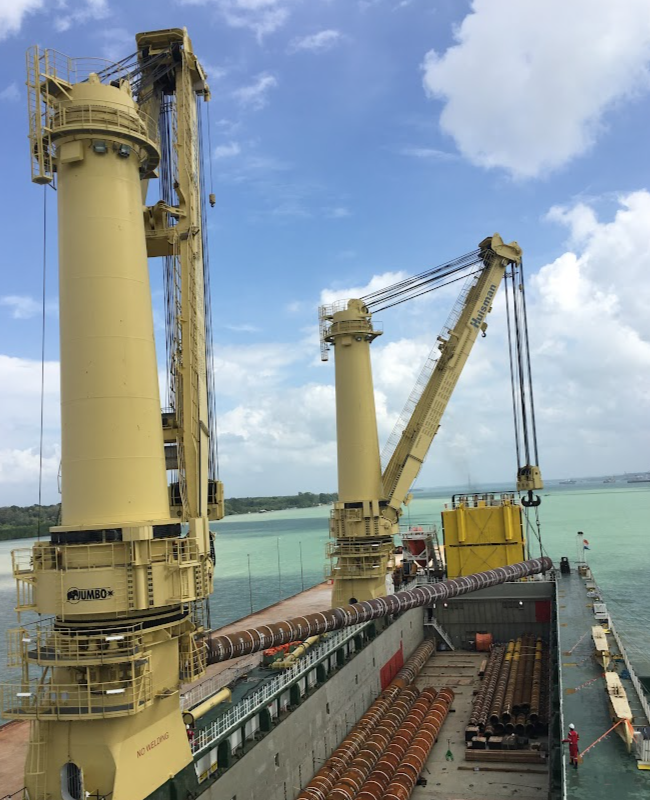
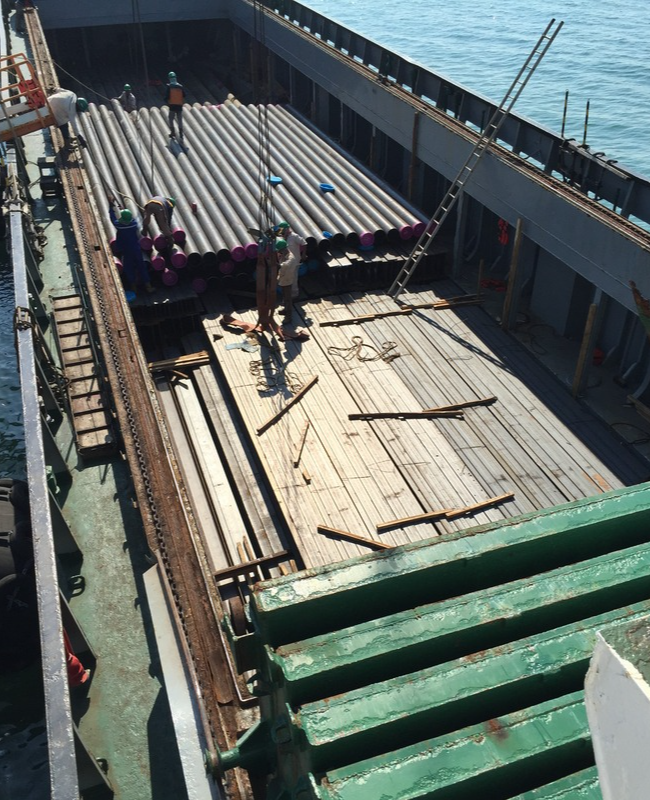

Operations & supply chain
Coordinating logistics, inventory, warehousing and order fulfilment with a practical understanding of delivery.
BASED IN SINGAPORE
Hello, I’m Sam.
I connect hands-on logistics experience with IT project management, data science and AI to help organisations improve the way they work.
Always learning.
Always finding a better way.
01 / THE WAY I WORK
I began in logistics, spending more than a decade supporting safe, efficient and cost-effective operations in oil and gas and construction. The pandemic became a turning point: I upskilled into IT and discovered new ways to solve operational problems.
Since then, I’ve managed IT projects, led business development for AI video analytics, and completed an MSc in Computer Science specialising in Data Science and Artificial Intelligence. I bring these perspectives together to help organisations modernise supply chains, adopt AI and improve efficiency.
Coordinating logistics, inventory, warehousing and order fulfilment with a practical understanding of delivery.
Bringing operational experience into IT projects, with a focus on requirements, coordination and business process improvement.
Combining postgraduate study in data science and AI with experience in AI video analytics business development.
02 / SELECTED WORK
A few chapters from my work
in logistics and technology.
AUG 2024 — PRESENT / UES HOLDINGS PTE LTD
Integrated Waste Management Facility EPC2, connecting project logistics with business process improvement.
SEP 2021 — AUG 2023 / NOVACITYNETS
Experience with the CORENET 2.0 e-submission system, with skills in requirements gathering and Zendesk.
MAR 2021 — OCT 2021 / NOVACITYNETS
A built environment technology project associated with FORNAX Cloud, BIM and building technologies.
EARLIER WORK / MARINE & SUPPLY CHAIN

PROJECT LOGISTICS01 / MARINE & OFFSHORE
Coordinating heavy-lift vessel transport for offshore installation piles, from Korea to Malaysia and onward to the offshore field.

SUPPLY CHAIN02 / PLANNING & COORDINATION
Coordinating international material shipments to a fabrication yard in Vietnam, aligned with production priorities and limited storage space.
EXPLORING WHAT’S NEXT / ACADEMIC PROJECT, 2021
A look at my BIM customisation project.
03 / MY JOURNEY
My path brings together logistics, digital project delivery and continuous learning in data and AI.
View my LinkedIn profile ↗Project experience with the Integrated Waste Management Facility EPC2, with logistics management and business process improvement among the associated skills.
IT project experience with the e-submission system, including requirements gathering and Zendesk.
A move into building technologies and Building Information Modeling, alongside my studies in integrated digital delivery.
Logistics Manager in oil and gas, supporting engineering, procurement, construction and installation projects, as well as transportation and installation.
Freight and logistics executive roles, followed by sales supervision in freight forwarding.
04 / EDUCATION & CONTINUOUS LEARNING
From logistics fundamentals
to data science and AI.
JUN 2024 — FEB 2026 · COMPLETED
Data Science & Artificial Intelligence
Università degli Studi Guglielmo Marconi
JUL 2024 — MAY 2025
Lithan Academy
Python for data science, generative AI, machine learning, deep learning and agile project management.
OCT 2020 — JUL 2021
BCA Academy · Built Environment
Smart facilities management and BIM for architecture.
2005 — 2006
Singapore Institute of Materials Management
05 / LET’S CONNECT
Have a project in mind, a shared interest, or just want to say hello?
I’d be happy to connect.